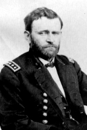

|

|

|
|
|
Commanding general of the Union Army, and eighteenth
president of the United States, Ulysses Simpson Grant was born on
April 27, 1822, in Point Pleasant, Ohio. The oldest child of
Jesse and Hannah Simpson Grant was raised on the rough-hewn
Ohio frontier, first in Point Pleasant and then in nearby
Georgetown. The young Hiram Ulysses (his first and middle
names were later changed to Ulysses Simpson) struggled to
live up to his ambitious father's high expectations. Hiram
was sensitive, moody, and well educated for his time and
place. decision to send "Lyss" to West Point was ultimately
a wise one. During his four years at the U.S. Military
Academy (1839-1843) Grant was a middling student, but a
superb horseman. He clearly enjoyed the military life. A few
years after graduation from West Point, Lieutenant Grant
fought in the Mexican War, where he showed great courage and
skill as a soldier, winning promotion and accolades. The
young soldier had a talent for fighting, and even more, an
impressive knowledge of the strategy and tactics of warfare
learned from experience, not textbooks.
Despite his good record in the war, and a solid marriage
to the sister of one of his West Point classmates, Grant did
not do well in the peacetime army of the late 1840s and
early 1850s. Assigned to remote forts, Grant took to
drinking, and resigned from the Army under a cloud of
suspicion. The civilian world proved just as difficult.
Grant failed as a provider for his family, as a farmer, and
as a businessman. He lived on his father-in-law's land
outside of St. Louis, Missouri, until moving in 1859 to
Galena, Illinois to work as a clerk in his father's store.
Although these years were a low point in his life, there
were some happy times. He was a loving husband to Julia Dent
Grant, and an unusually attentive and affectionate father to
their four children. When the guns of Fort Sumter fired,
Grant was anxious to serve his country.
After briefly holding a series of low-level positions,
Lieutenant Colonel Grant was given command of the
Twenty-first Illinois Volunteer Infantry Regiment. Rising
swiftly through the ranks, Brigadier General Grant was
placed in command of the large Union supply and training
camp at Cairo, Illinois. In the fall and winter of 1861/62,
Grant used his troops aggressively, and in conjunction with
the U.S. Navy, captured the strategically important Fort
Henry on the Tennessee River and Fort Donelson on the
Cumberland River. When the Confederate commander of Fort
Donelson sent Grant a note to discuss the terms of surrender
for his army of 21,000 men, Grant replied: "No terms except
unconditional and immediate surrender can be accepted." Now
famous as "Unconditional Surrender" Grant, he continued to
display the winning ways that would bring him to the
favorable attention of President Lincoln and the
victory-starved North. Grant's hard won victories at Shiloh,
Tennessee (April 6 and 7, 1862); Vicksburg, Mississippi
(January-July 1863); and Chattanooga, Tennessee
(October-November 1863) made him the leading Northern
general of the Civil War.
Grant and Lincoln enjoyed an unusually close
relationship, and Grant developed political skills that
complimented his military abilities. Unlike many Union
generals, Grant believed firmly that the president's role as
commander-in-chief of the war was never to be questioned -
even if he disagreed with an order. For example, Grant did
not like the fact that many "political" generals were
appointed simply because they were popular figures back home
whose support Lincoln thought important to cultivate.
Nevertheless, he accepted the reality and worked with the
situation. Grant was an enthusiastic supporter of most of
Lincoln's policies, however, especially the use of black
soldiers. Most importantly, the popular Grant denied
emphatically that he had any interest in running for the
office of the president. By the end of 1863, Lincoln
realized that he had found the general that would lead the
country to victory. In January 1864, Lieutenant General
Grant came to Washington D.C. to accept command of all the
Union armies.
Grant did not rise to his position without controversy.
As he progressed up the chain of command, he was
increasingly subject to attacks on his character and
generalship. Charges of drinking, incompetence, and a brutal
indifference to death and suffering dogged him throughout
his career, and affected his reputation after the War as
well. There is no doubt that Grant did make mistakes. He was
caught unprepared for the Confederate attacks at Shiloh, for
example. He also quickly regretted an ill-advised order that
banned Jews from trading cotton. As to the reports of
Grant's drunkenness, the historical evidence on his drinking
shows that he rarely imbibed during the Civil War and never
when it counted.
Grant began to implement his grand strategic vision
during the spring and summer campaign of 1864. The plan,
which involved the movement of all Union armies at the same
time to attack and defeat the Confederates, drew Lincoln's
warm support and raised the hopes of the Northern nation for
a quick end to the war. Unfortunately, it took longer than
expected. The battles of the Overland Campaign, where Grant
and Robert E. Lee's armies fought to bloody stalemate in the
Wilderness, Spotsylvania, and Cold Harbor gave rise to the
nickname of "butcher" for the general-in-chief whose main
strategy seemed to be throwing bodies at the enemy.
Subsequent military historians have ably defended Grant
against the butcher charge, pointing out that Lee lost many
more men in proportion than did Grant, but Northern citizens
were unaware of this fact. Fortunately, Grant's trusted
western comrades, General William T. Sherman and General
Philip Sheridan, under Grant's direction, led victorious
armies that made possible Lincoln's re-election in fall of
1864. On April 9, 1865, at Appomattox Courthouse, Virginia,
Grant dictated the terms upon which the War ended, and upon
which the nation could begin the process of reconciliation.
Having led the Union army to victory, Grant emerged from
the Civil War an popular hero. Grant appeared to most of the
people as a man who had character and upright morality. Like
many, if not most, of his fellow countrymen, Grant had
tasted the bitterness of defeat and failure. He also had a
sharp intelligence that served him well in both plotting
strategy and in dealing with the citizen-soldier of the
Civil War. Grant had made many mistakes, but he had learned
from them. Moreover, he had a deep and abiding faith in
democracy and democratic institutions. Even his lack of
political experience was, in the eyes of those who viewed
politicians with contempt, a virtue. By 1866, the battles
between President Andrew Johnson and Congress had left Grant
as the most powerful man in the country. Nominated for
president by the Republican Party in 1868, Grant swept to
victory. He was aided by newly enfranchised Southern blacks
in states reconstructed by Congress, as well as by his
famous campaign slogan "Let Us Have Peace."
When Grant took office in 1869, Reconstruction
governments in which blacks participated existed in all the
former Confederate states except Tennessee. Although Grant
did his best to uphold these "Black Republican" governments,
violence-prone white supremacists gradually overthrew them
everywhere except in South Carolina and Louisiana before
Grant left office. Even in South Carolina and Louisiana,
which had black majorities, the Republican governments were
sustained only by the presence of army detachments. Black
Republicanism during Reconstruction failed not because of
Grant, but because growing Southern white resistance was
matched by growing Northern white apathy.
In foreign affairs, Grant was obsessed with the idea of
annexing Santo Domingo, but was frustrated by opposition in
the Senate. Grant's greatest success in this area came when
Secretary of State Hamilton Fish negotiated the Treaty of
Washington (1871), and prevented intervention in a Cuban
revolution before and after the Virginus Affair (1873).
Although rank and file Republicans stuck by Grant,
Republican intellectuals were disillusioned by his
presidency. They had hoped that he would be above
partisanship and appoint the "best people" (like themselves)
to office. Indeed, Grant did ignore politics initially in
his cabinet and other major appointments, but having
gratified no one in particular by his independent course, he
soon learned to please spoils-minded Republican Senators
like Roscoe Conkling of New York and Representatives like
Benjamin F. Butler of Massachusetts. Grant also proved to be
too trusting, and while personally honest, he could be duped
by unscrupulous friends and relations.
Reform Republicans were hostile to the spoils men, and
this increasingly hostile to Grant. They disliked corruption
in government circles, and were opposed to special favors to
corporations, whether in the form of land grants for
railroads or protective tariffs for manufacturers.
Ultimately, the reform Republicans split with the
administration and formed a new Liberal Republican Party.
The party's laissez-faire program included Civil Service
Reform, low tariffs, gold-backed currency, and no
legislation aiding special groups, be they wealthy
corporations or poor blacks. Grant could not stand the
self-righteousness and superior airs of many reformers, but
he recognized that some civil service reform would benefit
the nation. He approved tariff reductions, and he endorsed
gold-back "sound money". These actions somewhat undermined
the Liberal Republicans. To the dismay of the party's
leaders like Carl Schurz, the 1872 Liberal Republican
convention nominated for president Horace Greeley, the
eccentric editor of the New York Tribune. Although
the Democrats also nominated Greeley, Grant triumphed
handily in the election.
Grant's second term was marred by a severe economic
depression following the Panic of 1873 and by the exposure
of widespread corruption. For example, Orville E. Babcock,
Grant's personal secretary, was implicated in the Whiskey
Ring that defrauded the government of millions of dollars in
internal revenues. Grant's Secretary of War, William Worth
Belknap, illegally sold an Indian post tradership. The
Republican Party was already disintegrating in the South,
and the scandals and economic stagnation also caused it to
decline in the North. Two important measures Grant backed
bucked the ebbing tide. Despite financial struggles, Grant
opposed even mildly inflationary measures and approved the
Specie Resumption Act (1875) that would put the United
States back on the gold standard on January 1, 1879. And
despite flagging interest in aiding African Americans, he
signed the Civil Rights Act (1875) that guaranteed blacks
equal rights in public places such as streetcars, theaters,
and hotels and prevented their exclusion from juries. When
the outcome of the presidential election of 1876 was in
dispute from November 1876 to March 1877, Grant behaved
circumspectly, supported Electoral Commission Act (1877),
and never once hinted that that he would use his control of
the Army to declare fellow Republican Rutherford B. Hayes
the winner.
Throughout his presidency, Grant remained steadfast in
the belief that the goals of the War should be preserved
even as the country's enthusiasm for reconstruction of the
South in the North's image faded away. Grant's final task as
president harked back to his first, and perhaps most
important achievement: to ensure a stable transition between
presidents. He succeeded in 1876, just as he had succeeded
in 1868, and the country was reconciled for good. Few
professional politicians could have done better and most
might have done far worse.
In retirement, Grant went on a world tour (1877-1879),
lobbied unsuccessfully for nomination to a third term as
president, and went into the brokerage business. His firm,
Grant & Ward, went bankrupt in 1884, leaving him broke.
Mortally ill with throat cancer, Grant retreated to his home
to write his Personal Memoirs. Regarded by many as
the greatest military memoirs since Caesar's
Commentaries. Grant was in a great deal of pain as he
raced against the clock to complete his book. He died within
weeks of finishing the task. Upon publication, Grant's
memoirs sold hundreds of thousands of copies and recouped
his fortune for his family. His memory as one of America's
greatest generals, if not one of its greatest presidents,
was secured.
Grant's legacy is deep and wide. By the time of his death
on July 23, 1885, at Mount McGregor, New York, Ulysses S.
Grant was an icon in the historical memory of the War shared
by a whole generation of men and women. Americans of that
time compared Grant favorably to Washington and Lincoln.
They believed that an appreciation of Grant could only come
with the recognition that he was both the general that saved
the Union and the president who made sure that it stayed
together. On the same day that one and a half million
Americans attended Grant's funeral in New York City and
countless others commemorated his life in cities and towns
across the country, a newspaper headline provided the
perfect epitaph for the accomplishments of General and
President Ulysses S. Grant: "The Union, His Monument."
Source: Joan Waugh, ed., Facts on File Encyclopedia of American
History: Civil War and Reconstruction, 1856 to 1869 (New York: Facts on
File, 2003), 154-158.
|